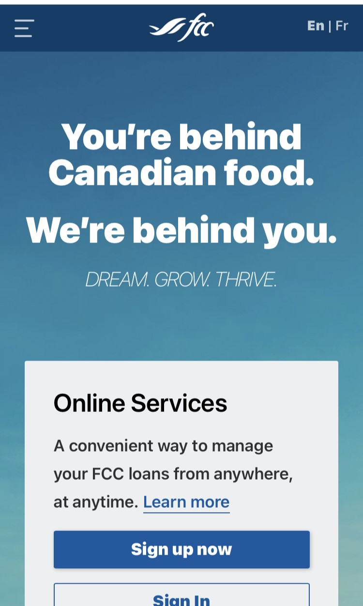

Hierarchy
ATB Financial
atb.comATB’s website is an ideal example for visual hierarchy with their clear design choices and layout. Banks have products that they offer customers, but some products need to sell more abundantly than others, example: investments vs loans. ATB has laid out their website so that the first thing you see is a link to an investment campaign, then as you descend through the webpage you see other product offers. They also manage their visual aesthetics well with using colored text boxes and a picture to offer a quick look at the product to help hold your focus and attention.
White Space
Farm Credit Canada
fcc.com The white space and clear, open design of the FCC webpage, allows for them to offer the information that one may be looking for, while still providing sufficient information for their users. The layout is simple to follow and offers easy reading.
Contrast
Razer
razer.comRazor sports a page full of contrast, it is eye catching and visually appealing without being confusing or over designed. The dark background throughout the page, allows for great use of a bright color scheme that is their brand color, and allows for the basic white text to stand out and be easily read. The dark environment also allows for great visual effects and creative design to enhance their products.